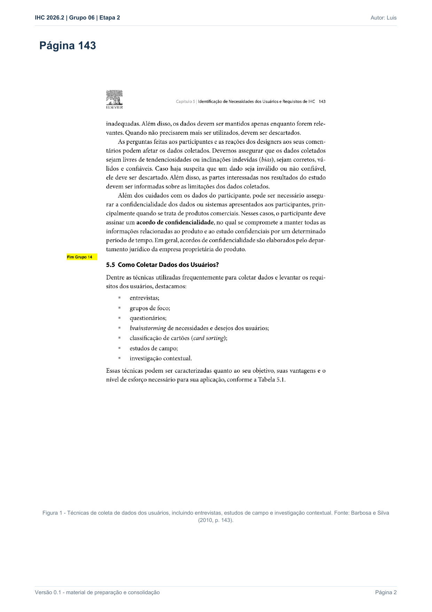
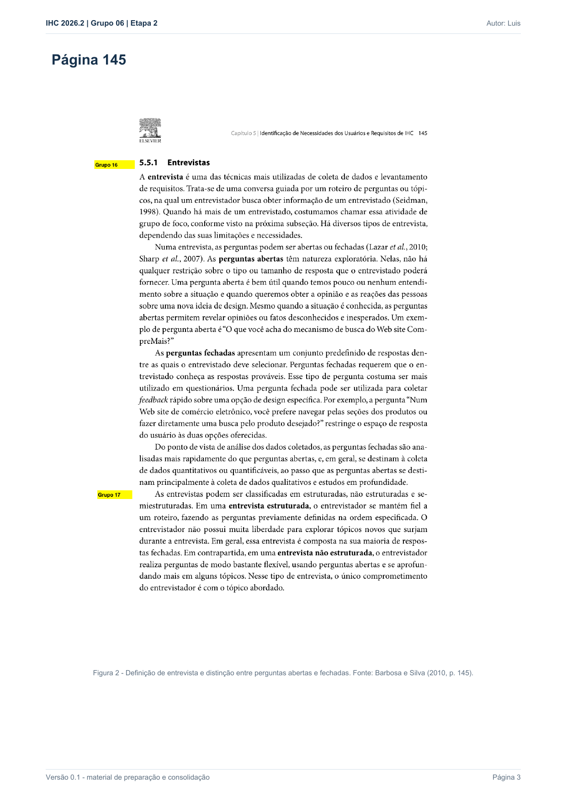
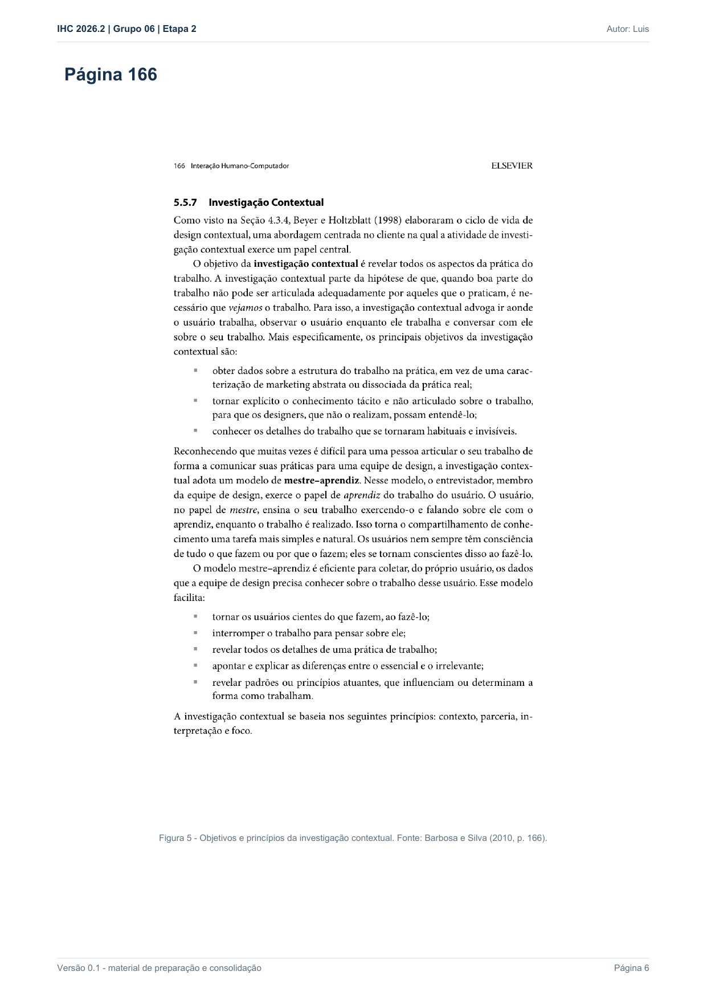

Responsável: Luís Henrique Luna de Arruda — Técnicas de coleta · Autor do item: Luís Henrique Luna de Arruda
Técnicas de coleta¶
Tabela de contribuição¶
| Integrante | Contribuição | Artefato / atividade |
|---|---|---|
| Luís Henrique Luna de Arruda | Fundamentação da entrevista semiestruturada | Entrevista |
| Luís Henrique Luna de Arruda | Fundamentação da observação inspirada na investigação contextual | Observação |
| Luís Henrique Luna de Arruda | Organização das evidências bibliográficas | Apêndice |
| Google Gemini | Formatação Markdown | Agradecimentos |
| Bruno Ferreira Dornelas | Aplicação da análise documental ao perfil docente | Análise documental |
| Codex (OpenAI) | Sistematização do procedimento documental | Agradecimentos |
Tabela 1 — Contribuição neste artefato.
Fonte: elaboração do Grupo 06 (2026).
Introdução¶
Para definir o perfil dos usuários do Portal do Senado Federal, o Grupo 06 combina duas técnicas: entrevista semiestruturada e observação da tarefa com relato em voz alta, inspirada na investigação contextual. A entrevista levanta características, objetivos e opiniões; a observação registra como a pessoa realmente age diante do portal. A análise conjunta reduz a dependência exclusiva do relato e fornece evidências para o perfil, as personas, os cenários, a HTA e a CTT.
Essa combinação foi utilizada nas cinco sessões com participantes. Para caracterizar o perfil Professor no contexto da Oficina Legislativa, o grupo acrescenta a análise documental, sem participação de usuários, conforme o procedimento específico.
Barbosa e Silva (2010, p. 143) incluem entrevistas, estudos de campo e investigação contextual entre as técnicas de coleta de dados dos usuários. A Figura 1 reproduz a lista utilizada pelo grupo (Apêndice A).
Item de conteúdo da disciplina¶
Autor do item: Luís Henrique Luna de Arruda
Entrevista semiestruturada¶
A entrevista é uma conversa guiada por perguntas ou tópicos para obter informações de uma pessoa. Na entrevista semiestruturada, o entrevistador utiliza um roteiro previamente definido, mas pode formular perguntas adicionais e explorar tópicos que surgem durante a conversa. Perguntas abertas favorecem respostas detalhadas e podem revelar opiniões ou fatos que o pesquisador não havia previsto (BARBOSA; SILVA, 2010, p. 145). A Figura 2 apresenta o trecho de referência (Apêndice A).
Nas sessões do grupo, essa técnica investiga dados demográficos não identificadores, formação, experiência digital, familiaridade com fontes oficiais, experiência com o Portal do Senado, objetivos, estratégias, expectativas, dificuldades percebidas e gravidade dos erros. As perguntas devem ser neutras e permitir aprofundamento sem sugerir a resposta.
Observação da tarefa e investigação contextual¶
O estudo de campo busca compreender o comportamento da pessoa no contexto em que uma atividade ocorre. A investigação contextual aprofunda a observação ao combinar a execução da tarefa com conversa sobre o trabalho, em uma relação mestre-aprendiz: a pessoa demonstra sua prática, e o pesquisador observa e pergunta sem assumir que já conhece o processo (BARBOSA; SILVA, 2010, p. 164–166). A Figura 3 reúne o trecho sobre objetivos e princípios da investigação contextual (Apêndice A).
As sessões do grupo não são classificadas automaticamente como estudos de campo completos, pois nem todas ocorrem no ambiente habitual de trabalho. Por isso, o grupo adota a denominação mais precisa observação da tarefa com relato em voz alta, inspirada na investigação contextual. Durante a tarefa, o pesquisador registra o caminho, os termos de busca, as decisões, hesitações, erros, retornos, pedidos de ajuda, tempo e critério de sucesso.
Aplicação conjunta¶
As técnicas são aplicadas na mesma sessão, mas produzem evidências diferentes:
| Técnica | Principal evidência | Artefatos alimentados |
|---|---|---|
| Entrevista semiestruturada | Respostas sobre perfil, objetivos, experiência, opiniões e expectativas | Perfil do usuário, persona e cenário |
| Observação da tarefa | Ações, caminhos, falas em contexto, hesitações, retornos, tempo e resultado | Cenário, HTA e CTT |
Tabela 2 — Funções complementares das técnicas de coleta.
Fonte: elaboração do Grupo 06 (2026).
Na sessão de Luís Henrique, realizada presencialmente em 27/09/2026, a participante utilizou um computador com Microsoft Edge. O arquivo transcrito registra consentimento, entrevista, explicação da atividade, aproximadamente 8min10s de navegação e perguntas finais. Ela começou por Especiais e Grandes Coberturas, abriu notícia, tramitação, multimídia, datas e eventos, retornou várias vezes e depois encontrou Atividade legislativa, Comissões e CCJ. Não usou a busca global e não recebeu indicação do caminho. Concluiu a localização da 13ª reunião extraordinária da CCJ, sua pauta, um item e o resultado. O percurso detalhado está na página individual.
Análise documental do perfil docente¶
Barbosa e Silva (2010, p. 138) indicam que documentação de processos, normas, manuais e materiais de treinamento ajuda a conhecer o produto e suas restrições. O grupo operacionaliza essa orientação pela seleção de fontes oficiais, extração de evidências localizáveis, comparação de versões e ligação entre evidências e atributos. Esse procedimento não é apresentado como técnica nomeada na lista da p. 143.
A análise documental de Bruno registra o corpus D01–D06, a consulta em 05/10/2026, as evidências E01–E09, o fluxo previsto e divergências entre documentos. O perfil docente utiliza essa base, sem transformar regras do serviço em hábitos pessoais ou em observação de uso.
A leitura dos destinos públicos identificou exigência de autenticação para a área docente e para a emissão da declaração. As etapas autenticadas não foram executadas. As telas presentes no manual são evidências documentais da versão ilustrada, não capturas de uma sessão atual. Não houve recrutamento nem coleta de dados pessoais nesse procedimento; as sessões anteriores e seus cuidados permanecem preservados.
Consolidação das evidências¶
A revisão dos registros existentes utiliza o escopo atual, os mesmos campos de descrição para os quatro perfis e a matriz de cobertura. Relato, observação, reconstrução e regra documental são identificados separadamente. Informações já registradas podem completar o consolidado; atributos ausentes dependem de fontes adicionais ou coleta complementar. A conferência dos artefatos verifica o encadeamento das evidências, sem substituir validação com usuários.
Cuidados metodológicos e éticos¶
- apresentar o TCLE e esclarecer dúvidas antes da coleta;
- pedir autorização antes de qualquer gravação de voz ou tela;
- informar que a interface está sendo avaliada, e não a participante;
- evitar perguntas indutivas e ajuda prematura;
- registrar separadamente fala, comportamento observado e interpretação do pesquisador;
- marcar toda ajuda oferecida durante a tarefa;
- anonimizar dados pessoais e não publicar gravações sem autorização específica;
- distinguir o roteiro planejado do que efetivamente ocorreu.
Na sessão de Luís, a transcrição registra dois aceites para participação e gravação de voz e tela (01:46–02:08). Não há autorização verbal transcrita para imagem facial. Como o entrevistador informou que o vídeo contém rostos e o TCLE recebido declara que não haveria vídeo/imagem, a gravação não será publicada. Qualquer uso das imagens exige regularização por termo complementar ou nova autorização específica.
Agradecimentos¶
Esta página contou com apoio do Google Gemini na consolidação do material preparatório e na formatação Markdown. A seleção das evidências, a condução da coleta e a conferência das citações são de responsabilidade do autor.
Histórico de versão¶
| Versão | Data | Descrição | Autor(es) | Revisor(es) |
|---|---|---|---|---|
0.1 |
27/09/2026 | Fundamentação das duas técnicas, aplicação conjunta e evidências bibliográficas | Luís Henrique Luna de Arruda | Israel Soares de Paiva |
0.2 |
27/09/2026 | Atualiza a aplicação das técnicas com os resultados relatados da sessão | Luís Henrique Luna de Arruda | Bruno Ferreira Dornelas |
1.0 |
27/09/2026 | Consolida a aplicação das técnicas, o percurso e os cuidados éticos com base na transcrição | Luís Henrique Luna de Arruda | Heitor Pinheiro Gonçalves das Chagas |
1.1 |
03/10/2026 | Nomeia a ferramenta de IA nos agradecimentos e na tabela de contribuição | Caio Breno de Souza Bezerra | Israel Soares de Paiva |
1.2 |
05/10/2026 | Acrescenta o procedimento documental e seus limites para caracterizar o perfil docente | Bruno Ferreira Dornelas | Caio Breno de Souza Bezerra |
1.3 |
05/10/2026 | Adota Professor como nome do perfil e referência textual, mantendo a Oficina Legislativa como recorte investigado | Bruno Ferreira Dornelas | Caio Breno de Souza Bezerra |
1.4 |
05/10/2026 | Explicita o procedimento de consolidação e sua ligação com escopo, lacunas e rastreabilidade | Bruno Ferreira Dornelas | Caio Breno de Souza Bezerra |
Referências¶
[1] BARBOSA, Simone Diniz Junqueira; SILVA, Bruno Santana da. Interação humano-computador. Rio de Janeiro: Elsevier, 2010.
Apêndice A — Evidências bibliográficas¶
As três imagens citadas ficam reunidas em blocos recolhidos, conforme o padrão do grupo para artefatos com três ou mais figuras.
Figura 1 — Técnicas de coleta de dados dos usuários


Fonte: BARBOSA; SILVA (2010, p. 143).
Figura 2 — Entrevistas e perguntas abertas, fechadas e semiestruturadas


Fonte: BARBOSA; SILVA (2010, p. 145).
Figura 3 — Objetivos e princípios da investigação contextual


Fonte: BARBOSA; SILVA (2010, p. 166).